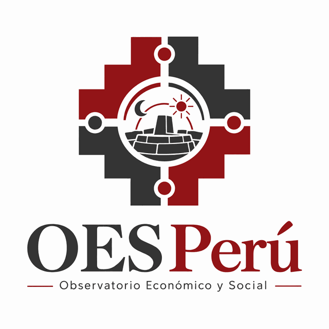

Asociación ley 1901 · ParísAssociation loi 1901 · Paris
Pensar el Perú y América Latina desde todas las disciplinas Penser le Pérou et l’Amérique latine à travers toutes les disciplines
Creamos y apoyamos acciones científicas y solidarias que desarrollan el conocimiento sobre las cuestiones económicas y sociales del Perú y de América Latina. Nous créons et soutenons des actions scientifiques et solidaires qui développent la connaissance des questions économiques et sociales du Pérou et de l’Amérique latine.

- FundadoFondé
- 2013
- SedeSiège
- ParísParis
- DisciplinasDisciplines
- 7+
- EnfoqueApproche
- PluridisciplinarioPluridisciplinaire
Quiénes somosQui sommes-nous
Un puente entre Francia y el PerúUn pont entre la France et le Pérou
«Desarrollar el conocimiento sobre las cuestiones económicas y sociales en relación con el Perú y América Latina, desde un ángulo pluridisciplinario.» « Développer la connaissance autour des questions économiques et sociales en relation avec le Pérou et l’Amérique latine, depuis un angle pluridisciplinaire. »
El Observatorio Económico y Social – Perú es una asociación sin fines de lucro creada en París en enero de 2013. Reúne a personas originarias del Perú y de América Latina, así como a todas aquellas interesadas en la región.
L’Observatoire économique et social – Pérou est une association à but non lucratif créée à Paris en janvier 2013. Elle réunit des personnes originaires du Pérou et d’Amérique latine, ainsi que toutes celles qui s’intéressent à la région.
Nuestra vocación es la difusión de saberes: acercar la investigación académica al público, fomentar el diálogo entre investigadores, estudiantes y ciudadanos, y apoyar iniciativas solidarias vinculadas al Perú.
Notre vocation est la diffusion des savoirs : rapprocher la recherche académique du public, encourager le dialogue entre chercheurs, étudiants et citoyens, et soutenir des initiatives solidaires liées au Pérou.
DisciplinasDisciplines
Un objeto, muchas miradasUn objet, de nombreux regards
EconomíaÉconomie
Crecimiento, empleo, informalidad y desigualdades.Croissance, emploi, informalité et inégalités.
SociologíaSociologie
Migraciones, ciudades y transformaciones sociales.Migrations, villes et transformations sociales.
AntropologíaAnthropologie
Pueblos andinos y amazónicos, culturas y territorios.Peuples andins et amazoniens, cultures et territoires.
LiteraturaLittérature
Letras peruanas y latinoamericanas, traducción.Lettres péruviennes et latino-américaines, traduction.
FilosofíaPhilosophie
Pensamiento latinoamericano y debates contemporáneos.Pensée latino-américaine et débats contemporains.
Ciencia políticaScience politique
Instituciones, democracia y políticas públicas.Institutions, démocratie et politiques publiques.
DerechoDroit
Derechos, regulación y cooperación internacional.Droits, régulation et coopération internationale.
Y más…Et plus…
Toda disciplina que aporte a la comprensión del Perú.Toute discipline qui éclaire la compréhension du Pérou.
Qué hacemosCe que nous faisons
Acciones científicas y solidariasActions scientifiques et solidaires
Conferencias y seminariosConférences et séminaires
Encuentros con investigadores y especialistas sobre la actualidad económica y social del Perú.Rencontres avec des chercheurs et spécialistes sur l’actualité économique et sociale du Pérou.
Difusión de saberesDiffusion des savoirs
Publicaciones, notas de análisis y apoyo a trabajos académicos y estudiantiles.Publications, notes d’analyse et soutien aux travaux académiques et étudiants.
Proyectos solidariosProjets solidaires
Apoyo a iniciativas que vinculan el conocimiento con el desarrollo de comunidades en el Perú.Soutien à des initiatives qui relient la connaissance au développement de communautés au Pérou.
ParticiparParticiper
Únase al ObservatorioRejoignez l’Observatoire
El Observatorio está abierto a investigadores, estudiantes, profesionales y a toda persona interesada en el Perú y América Latina. Puede participar como:
L’Observatoire est ouvert aux chercheurs, étudiants, professionnels et à toute personne intéressée par le Pérou et l’Amérique latine. Vous pouvez participer en tant que :
- miembro de la asociación,
- ponente o autor de una publicación,
- voluntario en nuestros proyectos,
- institución asociada.
- membre de l’association,
- intervenant ou auteur d’une publication,
- bénévole dans nos projets,
- institution partenaire.
ContactoContact
- CorreoE-mail
- contact.oesperu@gmail.com
- RNA
- W751218150
- RegistroDéclaration
- 18 de enero de 201318 janvier 2013